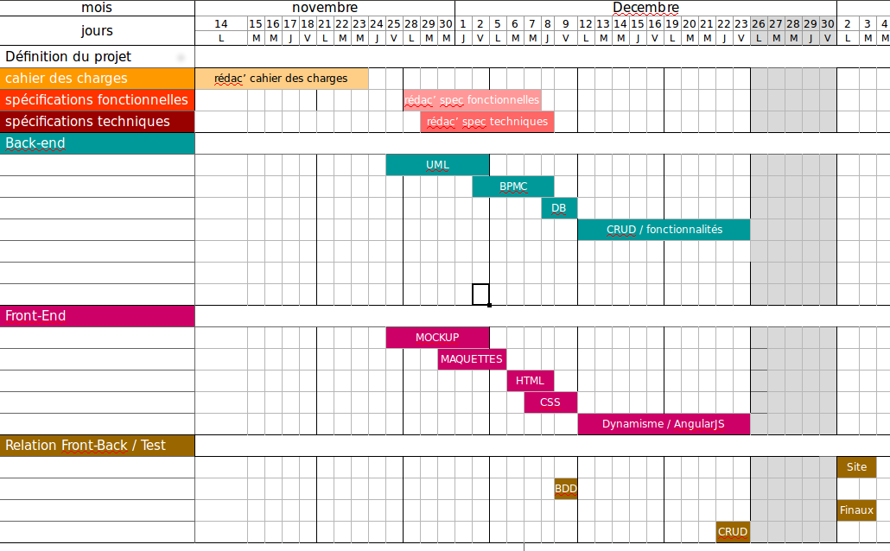

I. PRESENTATION DU PROJET
1. l'association "La bouée Corsaire"
L'association bouée Corsaire n'a pas encore réalisé une description.
2. PRéSENTATION DU PROJET
2.1. description du projet
1.1 Le contexte : Aujourd'hui, l'homme perd une grande partie de son temps à exécuter des actions pour lequel il n'est pas véritablement opérant et impliqué. Ainsi, le temps consacré n'est pas déboursé dans un travail de qualité. Pourtant, il est certain qu'une personne aura toutes les aptitudes pour réaliser cette tâche de manière qualitative, efficace et plaisant. On peut constater une perte de temps et de compétences significative. Car il y a d'un côté énormément de besoins qui ne peuvent être assouvis correctement et il y a de l'autre côté énormément d'aptitudes qui ne sont pas et ne seront jamais utilisées à leur juste valeurs. Par ce constat, le client a fait émerger l'idée de réaliser un dispositif permettant d'échanger les tâches où l'on est inefficace contre des tâches où tout le potentiel peut être exploité. Dans le cadre de ce projet, le client aimerait mettre en place une application web responsive, facile d'utilisation, afin de permettre aux personnes disposant d'un compte sur le site d'exprimer des besoins ainsi que proposer des services. Cet échange de service fonctionnera par un système d'échange d'heures de services. Un volume horaire sera quantifié en amont de l'échange. Le fonctionnement sera assuré par une comptabilité « débit/crédit » où celui qui effectue le service sera créditeur et celui qui le consomme sera débiteur. Bien sûr, la volonté sera que ces deux profils soient le plus souvent égales, c'est-à-dire que chacun soit alternativement prestataire ou consommateur.
1.2 Importance du projet : Le projet de l'association bouée Corsaire à pour objectif de mettre en relation des personnes pouvant se rendre mutuellement services. Aujourd'hui, cette idée se fait au travers d'un tableur excel, c'est pour ainsi dire relativement complexe à gérer. Ce projet permettra à l'association de mieux gérer et d'obtenir une autonomie dans les échanges.
1.3 Les objectifs du projet : À l'heure actuelle, on peut considérer que plusieurs application web répondent à ce besoin, c'est notamment le système qu'Airbnb à mis en place, répliquer à une demande entre particulier au travers d'un système monétaire, hors l'association “ La bouée Corsaire ” désire remettre à neuf ce dispositif, en supprimant la monétisation des services. L'application web a pour objectif de mettre en contact les différents profils de connaissances et de compétences expertes et d'instaurer un système de partage entre particulier basé sur un “ paiement ” en temps, soit une méthode de troc achetée par du temps et de l'investissement. Les débiteurs et créditeurs sur le site, le seront d'un certain nombre d'heure, celui effectuant le service devenant créditeur et celui auquel le service est rendu devenant débiteur. L'échange ne pourra se faire que si nous avons donné de notre temps.L'application web de l'association recherche clairement à coaliser un ensemble de personnes par le partage de connaissances et compétences. L'association désire réellement étendre son projet au régional, au national puis éventuellement à l'internationnal. On peut clairement constater, un objectif d'unir et de mettre à profit la collectivité pour facilité l'échange en excluant le système de monétisation par l'argent. En effet, l'objectif principal étant de réaliser un service d'échange basé sur la mise à disposition de "temps".
Exemples :
-
Bernard Durand
-
Il est mécanicien et est touche à tout. Il n'a encore jamais utilisé l'application :
-
1. Malgré le fait de ne pas proposer de services par défaut. Il peut tout de même contacter Marie afin de régler les problèmes de plomberie.
2. Après avoir réalisé un premier échange avec Marie, il propose un premier service d'évaluation pour une heure afin de voir ce qui est actuellement en place et lister le matériel nécessaire. Marie pourra ainsi procéder à l'achat du matériel et Bernard pourra proposer en second service l'action manuelle pour refaire les joints de plomberie qu'il aura pu mieux évaluer.
-
Isabelle Martin
-
Isabelle est étudiante. Isabelle a déjà déjà taillé la haie de Marie pour un quota de deux heures. Mais les a déjà utilisées pour un cours de cuisine. Au sein de l'application, elle propose plusieurs services :
-
1. Petits travaux : initié.
2. Cours de guitare : 2h - initié.
-
Elle a listé un besoin :
-
1. Cours d'anglais
Isabelle utilisait l'application pour pouvoir bénéficier d'heures de cours d'anglais. N'ayant plus suffisamment d'heures disponibles afin de continuer ses cours d'anglais, elle doit réaliser un service. Elle voit que Marie a plusieurs besoins. Mais ne réponds pas à la plomberie car il ne s'y connait pas non plus.
Mais elle peut proposer de réparer l'ordinateur pour une durée estimée à deux heures. Certes elle n'est pas expert dans le domaine, mais se juge être à un niveau avancé.
L'application web de l'association recherche clairement à coaliser un ensemble de personnes par le partage de connaissances et compétences. L'association désire réellement étendre son projet au régional, au national puis éventuellement à l'internationnal. On peut clairement constater, un objectif d'unir et de mettre à profit la collectivité pour facilité l'échange en excluant le système de monétisation par l'argent. En effet, l'objectif principal étant de réaliser un service d'échange basé sur la mise à disposition de "temps".
2.2. Planning, méthodologie et version
2.1 La version : Le produit fini sera la version 1 de l'application web pour l'association de la bouée Corsaire. Partant sur la technologie de github pour la partage du projet, il est bon de savoir que celui-ci sera de l'open source.
2.2 Le planning : Au niveau du planning, il est demandé que l'application soit le plus abouti pour début janvier. La répartition des tâches se fera en fonction des compétences de chaque membre de l'équipe, soit un graphiste, deux développeur-front et deux développeur-back. Le planning sera organisé par un trello permettant ainsi d'être toujours au courrant de l'avancé du projet. (https://trello.com/b/j6zzA7HQ/la-bouee-du-corsaire)
répartition des tâches :

2.3 La méthodologie : La méthodologie appliqué durant se projet se basera sur le principe du scrum et la répartition du temps par le pomodoro.
2.3. Contraintes techniques
3.1 Technologie : Pour la partie du back de l'application web, le framework symfony en php est imposé. L'application sera réalisé en html5, css3, angularJs et symfony.
3.2 Autre applications : Il n'y aura pas d'autre application à intégrer au site web de la bouée Corsaire.
3.3 CMS : Il n'y aura pas de CMS à gérer.
3.4 Navigateurs et hébergement : L'application doit-être compatible sur tout navigateur, elle sera hébergée chez OVH.
2.4. contraintes ressources
L'équipe sera composé de deux développeurs front-end dont un graphiste et de deux développeurs back-end. Il y aura également un chef de projet.
2.5. SUIVI PROJET
Le prestaire s'engage à fournir une version 1 de l'application mobile. Il n'y aura pas de la part du prestataire un suivi de maintenance et de mise à jour. Il y aura une formation de l'équipe, notamment pour une notice d'installation, une spécification fonctionnelle, une spécification technique et un guide d'administration.
2.6. Prestation complémentaire
Il n'y aura pas de prestation complémentaire sur l'application web en dehors de la création de l'environnement graphique et design du site. De plus, comme mentionné ci-dessus, il y aura une version 1 du projet et une formation à l'utilisation du produit.
3. L'équipe en charge du projet
3.1. DESCRIPTION de l'équipe
1.1 présentation de la sociétée prestataire. : La Code Académie est un dispositif mis en place dans le cadre de la Grande école du numérique. Il s'agit d'une formation qui permet l'apprentissage du développement web/mobile pour tous les profils qui démontrent une forte motivation à apprendre des langages de programmation. Cette formation, proposée par la fondation FACE, suit la pédagogie Simplon, soit la méthode du "Learning by doing". La Code Académie est conventionnée et subventionnée par la Région Bretagne et l’Etat. Spécialement orientée vers les travaux pratiques, cette formation permet la réalisation de nombreux projets professionnels, en relation directe avec des entreprises. Ainsi l'apprentissage des bases du développement web,et des langages tels que HTML5/CSS3, Javascript et PHP se déroule avec de réelles contraintes techniques en lien avec les demandes des clients.
1.2 Équipe à la charge du projet : Lise Poirier, développeur front et graphiste. Latifa Boumizy, développeur front. Juliette Saint-James, développeur Back et Youness Dupond, développeur Back.
1.3 Délai de la réponse : Le prestaire s'engage à founir l'application web pour début janvier de manière la plus aboutie possible.
3.2. CONTACTS PENDANT LE DELAI DE REPONSE
La bouée Corsaire sera en contact uniquement avec le chef du projet, qui fera parvenir les échanges avec l'équipe de développeur.
II. fonctionnalités de l'application web
1. Description des fonctionnalitées.
1.1. DESCRIPTION des données
-
1. Pseudo de l'utilisateur.
2. Nom et prénom.
3. Adresse (qui ne sera pas divulguée).
4. Email.
5. Région de l'utilisateur.
6. Ville.
7. Téléphone, liste de choix "checkbox" :
- Privé
- Visible dans mes communications
- Visible par autrui au niveau de mes services
- Visible par autrui au niveau de mes besoins
8. Description de l’utilisateur.
9. Quota d'heures disponibles.
10. Compte actif.
1.2. Fonctionnalitées globales
2.1 Chaque utilisateur doit avoir un panel d'administration de son compte :
-
1. Ensemble des besoins.
2. Ensemble des services proposés.
3. Mes informations.
4. Historique des services et besoins réalisés.
5. Mes échanges ( En cours - Passés ).
2.2 Chaque utilisateur doit pouvoir réaliser des recherches sur les besoins et services d'autrui. Filtré par le biais :
1.3. Fonctionnalitées des besoins et des services
3.1 Les besoins : un besoin représente une des demandes d'un utilisateur, il contiendra les informations suivantes :
-
1. Utilisateur concerné.
2. Titre.
3. Catégorie (facultatif).
4. Description du besoin.
5. Niveau de l’expertise (facultatif).
6. Lieu (facultatif).
7. Statut..
8. Services.
3.2 Les services : Un service représente une des prestation que propose un utilisateur du site. Il contiendra les informations suivantes :
-
1. Utilisateur concerné.
2. Titre du service.
3. Catégorie (facultatif).
4. Description du service.
5. Niveau de l’expertise (Initié, Avancé, Expert).
6. Lieu (facultatif).
6. Statut.
3.3 Les catégories : un service ainsi qu'un besoin pourra être catégorisé. Ces catégories auront le format suivant :
Ces catégories ne seront pas administrables par les utilisateurs mais uniquement par l'administrateur du site .
3.4 Les dons : une personne doit avoir la possibilité de réaliser un don d'heures à un autre utilisateur. Pour se faire, au niveau de son compte utilisateur, il disposera d'une fonctionnalité pour donner un quota d'heures à autrui.
1.4. Fonctionnalitées d'administration
4.1 Administration : l'association sera détentrice d'un compte d'administrateur au sein de l'application. Un compte administrateur existera afin de permettre d'administrer les utilisateurs, leurs besoins. Administration du contenus ainsi que leurs services, le mailing etc... Toute manipulation réalisée par le compte d'administration doit être tracée. Nous souhaiterions avoir une visibilité (uniquement pour le compte admin), des manipulations réalisées de la sorte. Cet affichage ne devrait qu'être de la consultation.
4.2 Administration des messages : il doit être possible de désactiver des messages.
4.3 Administration de l'application : comme mentionné dans un paragraphe précédent, un compte administrateur existera au sein de l'application. Ce compte sera détenu par l'association "La Bouée Corsaire" et aura la possibilité de :
-
1. Désactiver des comptes utilisateurs.
2. Modifier des comptes utilisateurs.
3. Modification du quota d'heures disponible.
4. Modification possible du mot de passe.
5. Désactiver des messages.
6. Désactiver des utilisateurs.
7. Visualiser les échanges entre utilisateurs
8. Visualiser l'historique des besoins et services réalisés par des utilisateurs.
9. Administration des catégories.
Toute action réalisée par le compte administrateur sera historiée. Il devra être possible à tout moment de consulter cet historique par le compte administrateur.
1.5. Fonctionnalitées de Communication
5.1 Entre utilisateurs. Il doit être possible de contacter un utilisateur afin de lui indiquer que nous sommes intéressés par le service ou que nous pouvons répondre à un besoin. Pour ce fait, un formulaire doit être disponible. Ce formulaire contiendra les champs suivants :
-
1. Service ou Besoin Concerné.
2. Utilisateur répondant au besoin/service (automatiquement complété par l'identifiant de l'utilisateur connecté).
3. Commentaire.
4. Évaluation du temps nécessaire pour le service rendu (facultatif).
5. Date définie pour le service rendu (facultatif).
6. Lorsqu'une communication a été envoyée, il ne sera plus possible de le modifier.
Ce formulaire enverra un mail au destinataire avec l'ensemble des informations saisies. Il doit être possible de cocher une case afin que celui répondant au besoin reçoive une copie du mail. L'email devra contenir un lien vers le fil de discussion, ainsi qu'un lien vers l'utilisateur répondant au besoin.
La personne ayant besoin du service rendu pourra valider la requête lorsqu'il est en accord avec les conditions ainsi que le temps défini. Il devra pour se faire voir la communication réalisée par l'autre utilisateur. Et cliquer sur un bouton "valider la transaction". Plusieurs échanges doivent pouvoir se réaliser entre les deux utilisateurs jusqu'à ce qu'un terrain d'entente soit établi.
Le bouton de validation ne sera disponible que si une date et une durée horaire a été définie.
Ainsi les règles de négociations en cas de conflit sont à définir. Mais ce sera dans le genre à réduire la facture de par ex. 50%. Les 2 seront respectivement débités et crédités de 30 mn au lieu d?une heure.
5.2 Avec l'administrateur. Un utilisateur doit avoir la possibilité de remonter une anomalie, un problème ou une plainte à l'administrateur.
III. détails techniques
1. détails techniques des fonctionnalitées.
1.1. Liste des détails techniques.
Nom du site : La bouée Corsaire.
Thématique du site : Site de troc.
Adresse du site : www.bouee-du-corsaire.com
Extension(s) complémentaire(s): .com - .net - .fr
Portée du site : Site à but non commercial.
Type de site : Agenda - Petites annonces.
Public cible : Particulier, Artisans, PME.
Fonctionnalités : Agenda - Avis clients - Boutons de partage - Flux RSS - Formulaire.
Types de contenus : Textes - Images - Tableaux à double entrées - Graphiques.
Retouche d'images : Non.
Qui intègre les contenus ? Intégration des contenus de base par l'agence puis des contenus nouveaux par le client.
Origine des contenus : Le client fournit tous les contenus: textes, images etc...
Public cible : Particulier, Artisans, PME.
Public cible : Particulier, Artisans, PME.
2. Charte Graphique.
2.1. Liste des détails de la charte.
Charte graphique déjà existante : Non.
Design du site : Création d'un design sur mesure.
Logo du site : Intégration d'un logo déjà existant.
Style du site : Moderne et intuitive.
Affichage sur tablettes et smartphones :
< à 768px,=> à 768px, => à 992px, => à 1200px.
3. Maintenance et formation.
3.1. Liste des services de maintenance et formation.
Référencement : Recherche de mots clés.
Sauvegardes: : Pas de sauvegarde.
Mises à jour : Par le client.
Formations souhaitées : Administration du site et maintenance.
Nom de domaine et hébergement : www.bouee-du-corsaire.com, hébergement sur OVH pour sa réputation et sa fiabilité.
Formations souhaitées: : Administration du site et maintenance.
4. Charte éthique et mentions légales.
4.1. Pourquoi une charte éthique ?
Elle permet de se mettre d’accord à tout moment sur les objectifs, les droits et les devoirs de chacun au sein du réseau. Elle dresse les moyens, le plan d’action et les modalités de rencontre de ses membres. Mais c’est également un outil qui peut être exploité vers l’externe : il véhicule les valeurs et les messages professionnels qui crédibilisent le réseau et rassurent les clients et partenaires. Une carte d’identité fidèle qui décrit le réseau, sa raison sociale, le profil des membres, la couverture géographique.
4.2. Contenu
2.1 Un ordre de mission : qui définit les missions du réseau, ses objectifs en termes quantitatifs et qualitatifs. il s’agit d’aider les donneurs d’ordres à trouver les meilleurs prestataires prêts à répondre à leurs besoins et de regrouper les compétences pour répondre à des appels d’offres.
2.2 Un règlement intérieur : qui détermine les principes et une éthique de collaboration, les droits et les devoirs des membres.
2.3 Un document juridique : si votre réseau est formel, il doit pouvoir produire ses statuts.
2.4 Un document de recrutement : qui intègre une fiche de renseignements d’adhérent (motivation de son adhésion, appartenance à d’autres réseaux) et un formulaire d’adhésion qui a valeur de contrat.
La charte est un document associatif, communautaire, intégrer les membres actifs à la réflexion ainsi qu’à sa rédaction est une pratique courante. Il est recommandé de faire valider cette charte par tout nouveau membre pour cela une méthode usitée est de leur faire lire un bulletin d’adhésion complet.
4.3. Mentions légales
Tous les sites internet édités à titre professionnel, qu'ils proposent des ventes en ligne ou non, doivent obligatoirement indiquer les mentions légales suivantes :
-
1. Pour un entrepreneur individuel : nom, prénom, domicile.
2. Pour une association : forme juridique, adresse de l'établissement ou du siège social (et non pas une simple boîte postale), montant du capital social.
3. Adresse de courrier électronique et numéro de téléphone.
4. Nom et adresse de l'autorité ayant délivré l'autorisation d'exercer.
5. Nom du responsable de la publication.
6. Coordonnées de l'hébergeur du site : nom, dénomination ou raison sociale, adresse et numéro de téléphone.
Avant de déposer ou lire un cookie, les éditeurs de sites ou d'applications doivent :
-
1. informer les internautes de la finalité des cookies.
2. obtenir leur consentement.
3. fournir aux internautes un moyen de les refuser.